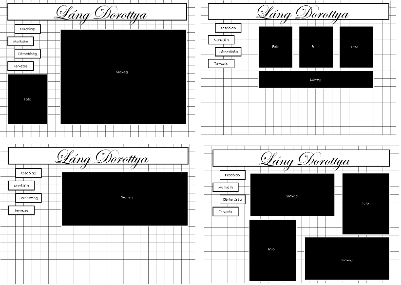
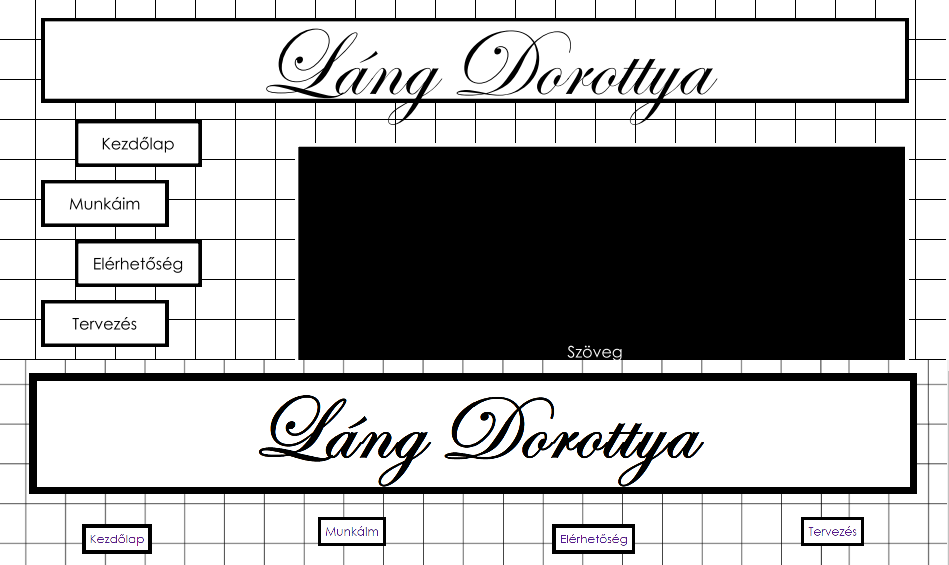

A kezdeti koncepcióm mindenképp egy letisztult, a mai divatnak megfelelő oldal volt, mely megjelenése tükrözi az általam képviselt stílust is. A fekete-fehér színkombináció kellő komolyságot ad az oldalnak véleményem szerint. Készítés közben több kissebb változtatást is eszközöltem, ezek többsége tudásom hiánya miatt történt. Az oldalakon a szövegek elhelyezkedése a képekhez viszonyítva szinte mindenhol változtak. A legnagyobb nehézséget talán a "munkáim" fül alatt található oldal megjelenése okozta, ezt a jövőben jobban kidolgoznám.

A legnagyobb változás egyértelműen a menüpontok elhelyezkedésében történtek. Ugyan sikerült az elhelyezést megoldanom először, de sajnos a szöveget már nem tudtam megoldani, hogy vele egy sorba kerüljön. Ezt a jövőben mindenképp meg szeretném oldani.
Felhasznált források:
https://www.w3schools.com